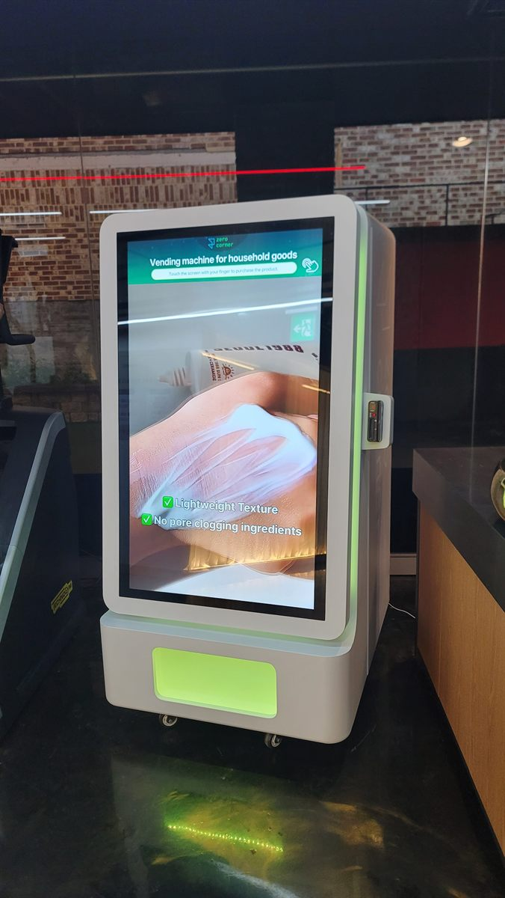

용산구 무인자판기 설치
피트니스센터 라운지 터치스크린 생활용품 자판기

헬스장에서 자판기가 실제로 팔리는 시간은 길지 않습니다. 운동이 끝나고 샤워실로 가기까지의 몇 분, 그리고 나와서 신발을 갈아 신는 동안입니다. 그 짧은 구간에 눈에 들어오지 않으면 회원은 그냥 지나칩니다. 그래서 헬스장 자판기는 품목보다 자리를 먼저 정해야 합니다.
이번 용산구 현장은 기구가 길게 늘어선 운동 공간과 카운터 사이에 라운지가 있는 구조였습니다. 관장님께서 처음 생각하신 자리는 기구 사이 빈 벽이었는데, 그쪽은 운동 중에는 아무도 멈추지 않는 자리입니다. 결국 라운지 쪽, 샤워실로 가는 길목으로 옮겼습니다. 기계도 일반 냉장형이 아니라 앞면이 화면인 기종을 썼습니다.
용산구 피트니스센터에 맞는 구성
품목은 음료만 넣지 않았습니다. 헬스장에서 회원이 깜빡하고 안 가져오는 물건이 따로 있습니다. 수건, 샴푸와 바디워시 소용량, 면도기, 헤어 제품, 마스크팩 같은 것들입니다. 이런 물건은 편의점까지 다녀오기 애매해서 그 자리에서 사게 됩니다. 여기에 생수와 이온음료, 단백질 음료를 더해 한 대로 묶었습니다.
화면형 기종을 쓴 이유는 두 가지입니다. 첫째, 생활용품은 모양과 크기가 제각각이라 일반 스프링 칸보다 수취 방식이 자유로운 쪽이 덜 걸립니다. 둘째, 화면에 사진과 설명이 크게 뜨기 때문에 처음 보는 품목도 손이 갑니다. 결제는 카드와 간편결제만 열었고, 재고와 매출은 관장님 휴대전화에서 바로 보입니다.
- 기종 — 앞면 전체가 터치 화면인 스마트 자판기 1대, 이동식
- 품목 — 샤워·세면용품, 수건, 헤어 제품, 마스크팩 + 생수·이온음료·단백질 음료
- 자리 — 운동 공간과 카운터 사이 라운지, 샤워실로 가는 길목
- 결제·관리 — 카드·간편결제 전용, 현금함 없음, 재고·매출 원격 확인
놓고 나서 좋았던 것, 걸렸던 것
좋았던 쪽입니다. 카운터 직원이 상대할 일이 줄었습니다. 그전에는 수건이나 세면도구를 찾는 회원을 데스크에서 받아야 했는데, 그 문의가 기계로 옮겨 갔습니다. 야간이나 무인 운영 시간에도 똑같이 팔린다는 점도 컸습니다. 기계가 이동식이라 센터 안에서 자리를 한 번 더 바꿔 볼 수 있다는 것도 장점이었습니다.
걸렸던 점도 적겠습니다. 첫째, 화면형 기종은 밝습니다. 조명을 어둡게 쓰는 센터라면 화면이 혼자 튀어 보일 수 있어, 운동 공간 정면보다는 라운지나 복도 쪽이 낫습니다. 둘째, 생활용품은 음료보다 회전이 느립니다. 처음부터 품목을 늘리면 몇 칸은 오래 그대로 있습니다. 두세 가지로 시작해 빠지는 것만 남기는 쪽이 낫습니다. 셋째, 바퀴가 달려 있어도 전원 자리는 고정입니다. 콘센트에서 먼 곳으로 옮기려면 배선을 다시 봐야 합니다.
용산구, 이런 자리가 잘 맞습니다
용산구는 일하는 동네와 사는 동네, 머무는 동네가 한 구 안에 섞여 있습니다. 한강로동 일대는 업무 빌딩과 대형 상가가 모여 평일 낮과 퇴근 직후에 사람이 움직이고, 이태원동과 한남동은 늦은 시간까지 흐름이 이어집니다. 청파동과 후암동, 효창동은 주택과 원룸이 섞인 주거지라 아침저녁으로 갈리고, 이촌동과 서빙고동은 아파트 생활권입니다.
실내 운동시설로 보면 24시간이나 무인 시간대를 운영하는 센터가 가장 잘 맞습니다. 사람이 없는 시간에도 그대로 팔리기 때문입니다. 샤워실을 갖춘 곳이면 생활용품 쪽이 더 붙고, 샤워실이 없으면 음료와 단백질 제품 위주로 좁히는 편이 낫습니다. 회원 수가 적은 소규모 센터라면 화면형 대신 작은 냉장 한 대로 시작하셔도 됩니다.
용산구 서비스 지역
이태원동 · 한남동 · 한강로동 · 이촌동 · 후암동 · 용산동 · 남영동 · 청파동 · 원효로 · 효창동 · 용문동 · 서빙고동 · 보광동 · 갈월동
용산구 전역에서 방문 상담이 가능합니다. 맞닿은 중구·마포구·성동구와 동작구 방면도 같은 담당자가 함께 다닙니다. 지역별 안내는 용산구 무인자판기 설치 안내 페이지에서 보실 수 있습니다.
용산구 무인자판기, 이렇게 시작하시면 됩니다
전화나 상담 신청으로 주소만 남겨 주시면 됩니다. 담당자가 나가서 놓을 자리의 벽면 길이와 천장 높이, 콘센트 위치, 회원 동선을 봅니다. 운동시설은 여기에 샤워실 유무와 무인 운영 시간을 한 가지 더 확인합니다. 이 두 가지에 따라 품목이 완전히 달라지기 때문입니다. 설치일이 정해지면 끝이며, 설치비는 받지 않습니다. 기계는 구입·렌탈·임대 중에서 고르실 수 있습니다.
지점을 여러 곳 운영하신다면 한 곳에 먼저 놓아 보시는 방법을 권해 드립니다. 한두 달이면 어떤 품목이 먼저 비는지, 시간대가 어떻게 갈리는지 화면에 숫자로 남습니다. 그 기록을 보고 다음 지점 구성을 정하는 쪽이 처음부터 모든 지점에 같은 구성을 넣는 것보다 덜 버립니다.
관련 검색어: 용산구무인자판기 · 한남동자판기설치 · 이태원자판기 · 용산헬스장자판기 · 한강로동무인자판기
※ 사진은 픽프리가 시공한 설치 사례이며, 글에 적힌 지역의 현장 사진은 아닙니다.
함께 많이 찾는 키워드
용산구 무인자판기 · 용산구 자판기 설치 · 용산구 자판기 임대 · 용산구 자판기 렌탈 · 서울 무인자판기 · 서울 자판기 설치 · 이태원동 자판기 · 한남동 자판기 · 한강로동 자판기 · 이촌동 자판기 · 후암동 자판기 · 청파동 자판기 · 효창동 자판기 · 서빙고동 자판기 · 헬스장 자판기 · 피트니스 자판기 · 운동시설 자판기 · 생활용품 자판기 · 세면용품 자판기 · 단백질 음료 자판기 · 터치스크린 자판기 · 스마트 자판기 · 카드 자판기 · 간편결제 자판기 · 무인키오스크 설치 · 자판기 설치비용 · 자판기 원격관리 · 무인매장 자판기 · 무인창업